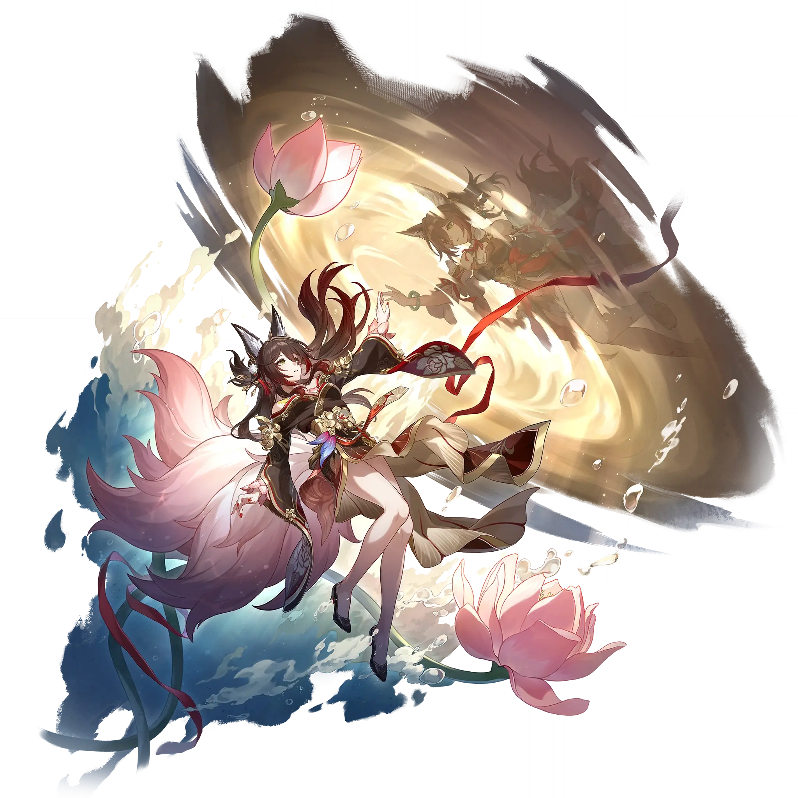

Tingyun • Fugue
Best Tingyun • Fugue build guide for Honkai Star Rail. See Tingyun • Fugue's best Relics, Light Cones, teams, Eidolons, Trace priority, and how to play Tingyun • Fugue.
🔍 Detail Skill
Semua skill aktif dan pasif beserta efeknya.
Deals Fire DMG equal to #1[i]% of Fugue's ATK to one designated enemy.
Deals Fire DMG equal to #1[i]% of Fugue's ATK to one designated enemy and Fire DMG equal to #2[i]% of Fugue's ATK to adjacent targets.
Grants one designated ally "Foxian Prayer". Enters the "Torrid Scorch" state, lasting for #1[i] turn(s). The duration reduces by 1 at the start of Fugue's every turn. "Foxian Prayer" only takes effect on the most recent target of Fugue's Skill. The ally target with "Foxian Prayer" increases their Break Effect by #2[i]% and can also reduce Toughness even when attacking enemies that don't have the c
While Fugue is on the field, enemy targets will get additionally afflicted with "Cloudflame Luster," equal to #2[i]% of their Max Toughness. When the initial Toughness is reduced to 0, "Cloudflame Luster" can be further reduced. When "Cloudflame Luster" is reduced to 0, the enemy will receive Weakness Break DMG again. While Fugue is on the field and after allies attack Weakness Broken enemy target
After using Technique, inflicts Daze on enemies within a certain area, lasting for #1[i] second(s). While Dazed, enemies will not actively attack ally targets. After entering battle via actively attacking Dazed enemies, Fugue's action advances by #4[i]%, with a #2[i]% base chance to inflict each enemy target with the same DEF Reduction state as that applied by Fugue's Skill, lasting for #3[i] turn
⚔ Light Cone Terbaik
Diurutkan dari yang paling kuat. Persentase menunjukkan performa relatif terhadap pilihan terbaik.
💎 Relic Set Terbaik
Set terbaik untuk karakter ini, diurutkan berdasarkan prioritas.
📊 Stat Utama
Stat yang dicari pada tiap slot.
👥 Tim yang Direkomendasikan
Karakter yang sering dipasangkan bersama Tingyun • Fugue.
 Rappa
Rappa
 Lingsha
Lingsha
 Xueyi
Xueyi
🔗 Lanjutkan
Build ini dirangkum dari Prydwen Institute. Starwise tidak menghitung sendiri. Angka bisa berubah setelah patch atau karakter baru rilis.